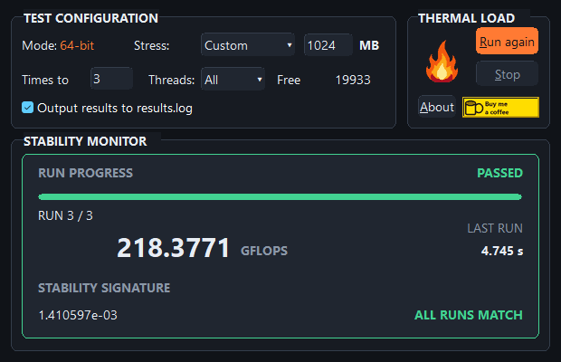
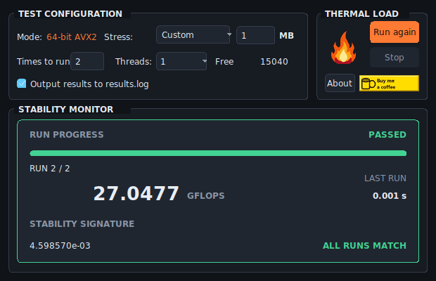

Windows
v3.1.0
Test from your Windows desktop with a graphical interface and optional result logging.
Windows 10 / 11 · x64 · 27 KB Download for Windows Windows quick startCPU stability testing
Push for a higher clock. Check your next undervolt. Test your CPU in Windows, in Linux, or directly from a bootable USB.

Test from your Windows desktop with a graphical interface and optional result logging.
Windows 10 / 11 · x64 · 27 KB Download for Windows Windows quick start
Test from your Linux desktop with the same controls, results view, and optional logging.
Linux · x64 · X11 · 21 KB Download for Linux Linux quick start
Boot from a USB and test your CPU before loading an operating system.
x64 UEFI · Windows setup · 84 KiB Download USB installer How to boot from USBMake every adjustment count
Your PC boots. The desktop looks fine. But can your overclock take the pressure? Give your CPU a hard workout with IBT, then use the result to decide what to try next.
Found a little more speed in the BIOS? Test those settings under heavy CPU load before you call the overclock done.
A higher clock or a lower voltage gives you a new setup to check. Run IBT again after a change to see how it holds up.
A failed test tells you those settings need another look. Make an adjustment and test again as you work toward an overclock worth keeping.
Choose memory use, CPU threads, and the number of runs. Start with a short check, then go longer as you refine your settings.
See how your settings hold up
Choose memory use, CPU threads, and the number of runs. Follow the progress, check the result, and run the test again after your next adjustment. A pass means the calculations stayed consistent during this test.
Keep it in your tuning toolkit
Getting another year out of your current rig? Chasing the limit of a build you've saved up for? Keep IBT handy for the next adjustment. Choose Windows, Linux, or bootable USB. The desktop apps run without installation; the USB installer prepares a drive you can boot for your next test.
From download to first test
One download includes everything you need. Prepare the drive on Windows, then use it on a PC with 64-bit UEFI.
Open the installer and select your drive. Its name, capacity, and drive letters help you pick the right one.
FAT32 drives keep your files. If formatting is needed, back up your files first. Setup identifies the drive and requires you to type ERASE before deleting anything.
Open your PC’s boot menu and choose the USB’s UEFI entry. Set Size, Threads, and Runs, then press Enter.
This release is unsigned: disable Secure Boot to start the USB edition. The installer excludes internal and system disks. An existing USB boot file is backed up before replacement.
Windows · Linux · Bootable USB
Three ways to put your settings to the test.
Download and open the app. Choose your settings, then click Start.
Download for WindowsWindows 10 / 11 · x64 · 27 KB. Unsigned executable; Windows may show a warning.
Release notes and checksumsMake the download executable, then open it and choose your settings.
Download for LinuxLinux x64 with X11, Xft, and glibc. Run chmod +x IntelBurnTest-linux-x64 after downloading.
Choose your USB in the installer, confirm preparation, and restart.
Download USB installerWindows 10 / 11 with .NET Framework 4.8 for setup. x64 UEFI and Secure Boot disabled to boot. 84 KiB.
Release notes and checksumsVerified in QEMU/OVMF; physical USB installation and firmware compatibility still need hardware validation. The installer is unsigned; Windows may show a warning. Legacy BIOS is unsupported.
Download the USB ZIP and extract it into an existing FAT32 USB. Back up an existing EFI/BOOT/BOOTX64.EFI before replacing it.
Download the raw image for your imaging tool. Writing this image erases its destination and creates a 64 MiB layout.